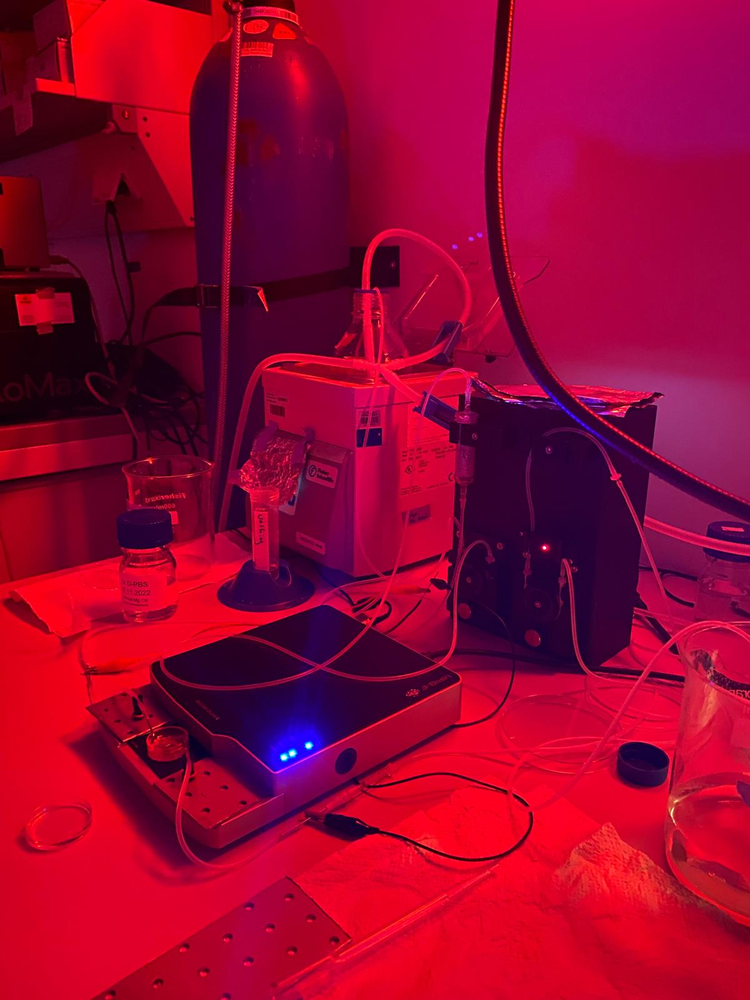
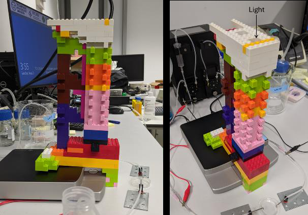
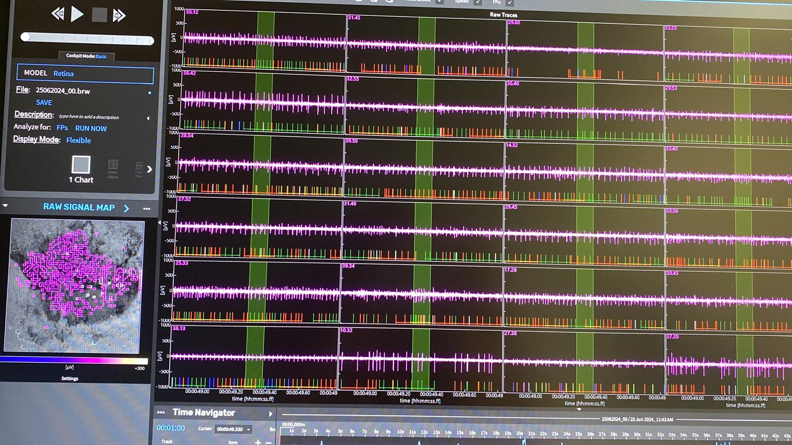

Establishing CMOS-MEA recordings in adult zebrafish retina
Center for Regenerative Therapies Dresden (CRTD), TU Dresden
For my master’s thesis, I worked to establish extracellular recordings from isolated adult zebrafish retina using a high-density CMOS microelectrode array. I investigated spontaneous and visually evoked activity, pharmacological modulation, and changes following retinal injury.
01 / Recording preparation
Ex vivo retinal preparation
Adult zebrafish retinas were isolated and positioned ganglion-cell-side down on the electrode array. I optimized tissue dissection and mounting to improve electrode contact, including vitreous removal and controlled mechanical stabilization.
CMOS-MEA recording platform
Recordings were performed using the 3Brain BioCAM DupleX and Accura CMOS-MEA chips (4,096 electrodes; 64 × 64 array). Retinal tissue was maintained in carbogenated Ames' medium under continuous perfusion.

02 / Visual stimulation & experimental conditions
Full-field light stimulation
White-light flashes with matched light and dark intervals (0.1–1.0 s) were presented from the photoreceptor side of the retina. Repeated cycles allowed comparison of stimulus-locked spiking, temporal response patterns and ON/OFF activity.
Pharmacological stimulation
Meclofenamic acid (MFA) was applied in a pharmacological experiment to examine changes in retinal spiking activity.
Light-induced injury
In a separate experiment, intense white-light exposure was used to investigate changes in spontaneous activity and light responsiveness following acute retinal injury.

03 / Data & signal analysis
Extracellular recordings were acquired and processed in BrainWave5 (3Brain). Detected spikes were sorted into putative units before extracting firing statistics and evaluating light-evoked responses. Subsequent statistical analysis and visualization were performed in R.
Spike detection and sorting
| Processing stage | Analysis parameters |
|---|---|
| Signal acquisition | 20 kHz sampling; 50 Hz high-pass filter |
| Spike detection | Precise Timing Spike Detection (PTSD); threshold 8 SD; 2 ms peak lifetime; 1 ms refractory period |
| Waveform extraction | 1 ms pre-peak and 1.5 ms post-peak |
| Spike sorting | PCA (5 features), K-means clustering; minimum 18 spikes; maximum 5 clusters |
Activity metrics
Mean firing rate, spike count, inter-spike intervals, burst activity and peak-to-peak amplitudes were used to describe spontaneous and evoked activity. Raster plots and firing-rate distributions supported comparisons between experimental conditions.
Visual response classification
Responses around light onset and offset were classified as ON, OFF or ON–OFF. The polarity index (PI) summarizes the relative onset and offset response amplitudes: PI = (AON − AOFF) / (AON + AOFF).
04 / Results & discussion
Improving retinal recordings
Refinement of tissue preparation and stabilization improved the detection of extracellular activity. Reliable tissue–electrode contact was central to obtaining spatially distributed recordings from adult retinal explants.
Heterogeneous light responses
White-light stimulation revealed distinct retinal response patterns, including ON, OFF and ON–OFF activity. Response magnitude and temporal dynamics varied between recorded units and stimulation intervals, supporting a preliminary functional characterization of retinal ganglion-cell activity.
Pharmacological modulation
MFA exposure altered retinal spiking activity, demonstrating pharmacological sensitivity of the recorded retinal preparation. These effects alone do not establish a uniquely gap-junction-mediated mechanism.
Light-induced retinal injury
In a separate light-injury experiment, spontaneous activity increased at the later recording point while visually evoked responses were markedly reduced. This distinction illustrates why elevated spontaneous firing cannot be interpreted as preserved visual function.
These experiments established a practical workflow for recording and characterizing adult zebrafish retinal activity. Interpretation remains dependent on preparation quality, the number of independent retinas and the distinction between putative extracellular units and definitively identified cell types.
05 / Experimental media
Selected original experimental material from the retinal CMOS-MEA project.

06 / What I would improve in a follow-up study
01 — Standardized light stimulation
I would build on the existing LEGO-based apparatus with programmable LED control, calibrated irradiance and synchronized stimulus timestamps. This would enable more reproducible intensity and temporal-response comparisons between retinal preparations [2].
02 — Spectral response characterization
I would extend white-light stimulation to calibrated ultraviolet, blue, green and red wavelengths to investigate spectral sensitivity and ON/OFF response properties. This approach is motivated by the tetrachromatic photoreceptor system of zebrafish [3].
03 — Functional recovery during retinal regeneration
I would apply the CMOS-MEA workflow to retinas collected at defined intervals after a validated injury-and-regeneration paradigm. Comparing healthy, injured and regenerating tissue would help assess recovery of stimulus-locked firing, response polarity and temporal reliability, rather than relying on spontaneous activity alone [4].
07 / References
- Seifert M. et al. (2023). Birds multiplex spectral and temporal visual information via retinal On- and Off-channels. Nature Communications. doi:10.1038/s41467-023-41032-z
- Chou T. H., Toft-Nielsen J. & Porciatti V. (2019). Adaptation of retinal ganglion cell function during flickering light in the mouse. Scientific Reports. doi:10.1038/s41598-019-54930-4
- Chhetri J., Jacobson G. & Gueven N. (2014). Zebrafish—on the move towards ophthalmological research. Eye. doi:10.1038/eye.2014.19
- Goldman D. (2014). Müller glial cell reprogramming and retina regeneration. Nature Reviews Neuroscience. doi:10.1038/nrn3723